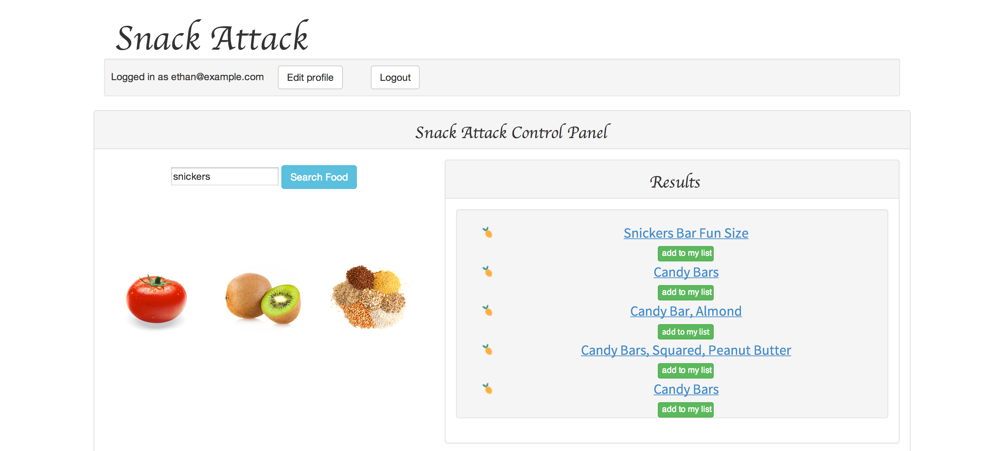
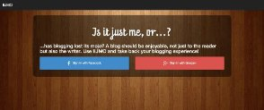
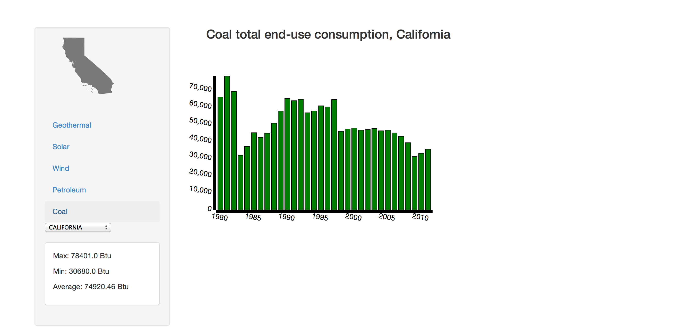

Intrests
- Making melodious music with others
- All the sports, basketball to ping pong
- Exploring the wildernes through camping, hiking or biking
- A good cup of coffee
Skills
- Ruby on Rails
- JavaScript
- jQuery
- PostgreSQL
- AJAX
- HTML/CSS
- Git
A little bit of backgound...
Coming from Alaska, moving to the big city of Boston for the WDI course was a sizable decision for me and I am glad I did it! After my decision to break off the traditional college path, I took it upon myself to learn Ruby which I very much enjoyed and seemed to grasp pretty well. My success and hunger for more, led me to General Assembly with hopes to gain a work ready skill set, and they did not disappoint. Throughout the course, my skills in not only ruby, but programming languages as a whole has increased tremendously. I'm glad I took the opportunity and very excited to enter the community as a young developer to keep expanding personally and professionally.
My commitment to enter the world of web development through General Assembly has allowed me to grow and thrive as a junior developer with all sorts of new technologies. It has given me the ability to take what starts as an idea in my head and build it from the bottom up into a fully functional web application; it is a very empowering feeling. Through projects as a single developer or on a team I have been able to unleash my creative abilities and apply them to apps that provide health information on foods, create energy consumption visualizations as well as a full-fledged blogging platform.
I am now looking to a join and grow with a team solving issues through technology that allow me to put my skills to work! I am ready to collaborate and produce great code to find that sense of accomplishment by doing what I love. The resources are inexhaustible and the possibilities are limited only by your own imagination.
Projects (scroll for more)
- 
- Snack Attack >>
- Technology used: Ruby on Rails, JavaScript, AJAX, PostgreSQL
- 
- Is It Just Me, Or... >>
- Technology used: Ruby on Rails, JavaScript, jQuery, oAuth, PostgreSQL
- 
- Energy Consumption Visulaization
- Technology used: Ruby on Rails, d3.js, JavaScript, jQuery, PostgreSQL